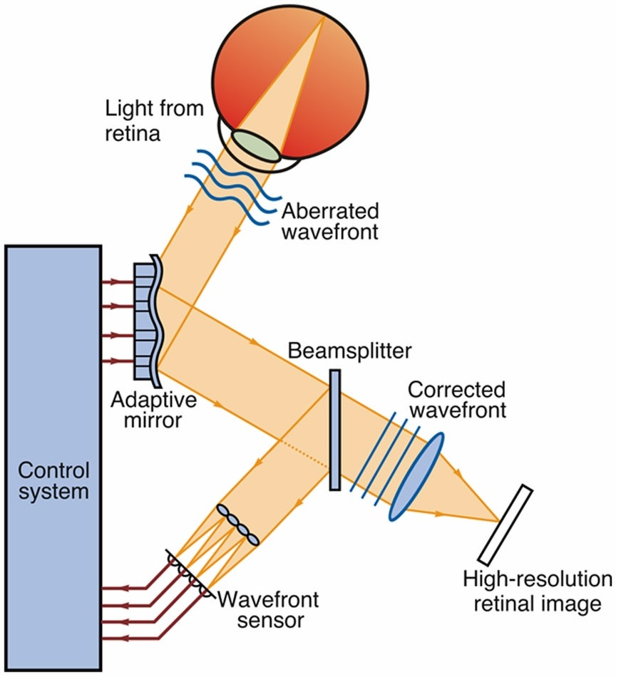

Retinal Function and Structure in Type 1 Diabetes
Evidence for an asymmetrical effect of Type 1 diabetes on retinal structure and function
Tom Wright, Alan Poon, Ahmed Salem,
Carol Westall
Diabetes and the Retina
- Retinal function affected before clinical retinopathy
- Colour vision deficits
- mfERG delays
- Retinal structure affected before clinical retinopathy
- Increased capillary tortuosity
- Venular thinning
- Decreased photoreceptor density
Multifocal ERG
- Veris™ FMSII
- 103 Hexagons
- M = 215 -1
- filter 10-100Hz
- P1 amplitude
Adaptive Optics

- Physical Systems Inc.
- Scanning laser ophthalmoscope
- 1024 x 1000 pixel resolution
- 23 frames per second
Population
- Adolescents & Young adults
- Diabetes for at least 5 years
- No retinopathy
- Blood glucose between 4 and 10 mmol / l
- Random eye selected
mfERG Study
| Diabetic | Control | |
|---|---|---|
| N | 54 (32 f, 22 m) | 71 (48 f, 23 m) | Age | 15.8 ± 2 | 17.6 ± 5 |
| Duration T1D | 8.3 ± 4 |
Some participants tested more than once Total tests:180
AO Study
| Diabetic | Control | |
|---|---|---|
| N | 29 (18 f, 11 m) | 44 (32 f, 12 m) | Age | 19.0 ± 3 | 18.5 ± 3 |
| Duration T1D | 10.7 ± 4 |
Some participants tested more than once Total tests:93
Not all quadrants imaged at every test:
Success rates: T1D = 56%, Controls = 58%
mferg P1 amplitude by hemisphere
| Interaction:Diabetic * Hemisphere p=0.05 | |
inter-hemisphere differences with age (mferg)
Cone density by hemisphere
| Interaction: Diabetic * Hemisphere p=0.08 |
inter-hemisphere differences with age (cone density)
mfERG vs Cone Density
Summary
- Retinal Function
- Nasal function > Temporal
- mfERG P1 amplitude is reduced in T1D
- Reduction preferentially affects the Nasal retina
- Reduction progresses with increasing disease duration
- Retinal Structure
- Nasal cone density > Temporal (In controls)
- Nasal cone density is decreased in patients with Type 1 diabetes